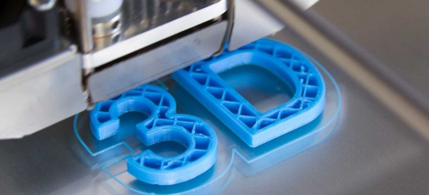

Diseño 3D


La tecnología 3D es una herramienta que permite crear y modificar objetos tridimencionales. También puede utilizarse para crear imágenes realistas de
objetos que no existen en la vida real, como dinosaurios, planetas o personas.
El diseñador 3D suele seguir una serie de pasos relacionados con sus diferentes cometidos:
- Conceptualización/estudio del proyecto
Estudio de la idea/necesidad del cliente para determinar cómo llevarlo a cabo teniendo en cuenta sus particularidades ya que, por ejemplo, no es lo mismo
diseñar los personajes de un videojuego que un proyecto arquitectónico para construir una biblioteca.
- Boceto (sketching)
Se realiza sobre todo cuando no vienen definidas las especificaciones para tener un boceto de cómo puede quedar el proyecto.
- Fase de creación y diseño
Etapa en la que se realiza el proyecto utilizando diferentes softwares (como Blender, ZBrush, TinkerKard…). En esta fase los conocimientos téécnicos deben
combinarse con la creatividad para diseñar, por ejemplo, simulaciones de obras públicas como un túnel o los escenarios de una serie de anime.
- Presentación al cliente
Para explicarle las funcionalidades y pormenores del diseño y determinar si se ajusta a sus demandas. En caso contrario, habrá que aplicar los cambios
necesarios.
Ámbitos de trabajo del diseñador 3D
El diseño 3D es una disciplina con muchas posibilidades más allá de la función básica de crear objetos en tres dimensiones.
Así, entre los tipos de diseño se puede diferenciar:
- Modelado 3D
Construcción de modelos y prototipos en 3D a partir de las líneas de un boceto o plano técnico. Se trata de un campo con diferentes técnicas y aplicaciones ya
que se puede emplear en el cine, televisión o videojuegos para crear personajes CGI (imágenes generadas por computadora), escenarios… En ingeniería se utilizar
para realizar simulaciones antes de ejecutar un proyecto real —como la construcción de un puente— para determinar su viabilidad.
- Renderizado
Procedente del término inglás render, es un proceso para generar imágenes en 3D consiguiendo que tengan la textura, los colores y los materiales iguales a los reales.
Se utiliza en el diseño de interiores, arquitectura, publicidad o videojuegos para, por ejemplo, idear escenarios fantásticos con gran realismo y precisión.
- Modelos por polígonos y curvas
En el primer caso, el sistema para diseñar imágenes en 3D utiliza polígonos (pirámides, cubos, dodecaedros…) mientras que, en el segundo, curvas definidas
matemáticamente. Sus aplicaciones son, sobre todo, en el sector de los videojuegos para diseñar personajes, edificios, criaturas fantásticas…
- Gráficos 3D
Representación en 3D de una serie de datos para mostrarlos de forma más atractiva y comprensiva. El diseñador 3D puede realizar este tipo de gráficos para
diferentes proyectos online como páginas web corporativas, vídeos publicitarios o aplicaciones móviles.
Tipos de diseños 3D
Los modelos 3D pueden dividirse en dos categorías universales:
- Solidos. Se representan como una roca pra definir el volumen. Se utilizan en los sectores de medicina e ingeniería.
- Carcasa. Representan la superficie de lo mostrado. Se trabaja con este tipo de diseños en ciencia ficción.
Para qué sirve el diseño 3D
- Ingeniería.
- Películas. Para impactar al público.
- Videojuegos. Permite crear personajes que realizan movimientos en el ángulo que el jugador quira.
- Industria médica. Representaciones interactivas de la anatomía.
- Arquitectura. Visualizar una construcción y poder detectar posibles errores o incongruencias
Ventajas de usar el diseño 3D
- Creación de diseños complejos. Permite crear, sin ayuda de terceros, componentes bajo demanda basados en diseños propios o de terceros.
- Personalización de objetos. Las impresoras 3D ofrecen la posibilidad de crear objetos únicos, personalizando cada creación.
- Reducción de costes. Desaparecen los gastos en moldes, herramientas complejas y materiales específicos. El único coste para crear un objeto impreso en
3D son las bobinas de los filamentos y el coste en electricidad.
- Reducción de los tiempos de producción. No es necesario el uso de intermediarios.
- Democratización de la tecnología. Gracias a la facilidad de uso, la fiabilidad y la reducción del precio de la impresión 3D, el acceso a esta
tecnología es mucho más fácil.
Desventajas de usar el diseño 3D
- El acabado de los modelos requiere trabajo. Los objetos impresos en 3D no tienen un acabado perfecto, suelen necesitar un pequeño esfuerzo para eliminar impurezas e imperfecciones.
- Poco catálogode materiales. Las impresoras 3D suelen aceptar un número limitado de materiales. Aun así, es importante destacar que, esta tecnología
está en consante evolución y la llegada de nuevos modelos más polivantes es inminente.
- Derechos de autor. El desarrollo y perfeccionamiento de esta tecnología también facilitará la réplica de muchos objetos, por lo que los derechos
de intelectuales de los diseños originales se verán vulnerados y se volverá una situación difícil de controlar.
El futuro de la impresión 3D: ¿Qué podemos esperar?
Es difícil negar la influencia que la impresión 3D ha tenido en el mundo de la tecnología. Desde la revolución en la industria manufacturera hasta la creación
de prótesis médicas personalizadas, la impresión 3D representa un gran avance en la fabricación y personalización.
A medida que esta tecnología ha avanzado, muchos se preguntan: ¿cuál es el próximo paso? ¿Cómo será el futuro de la impresión
3D? ¿Qué nuevas aplicaciones surgiráán?
En este post, exploraremos las posibles respuestas a estas preguntas y analizaremos algunas de las últimas tendencias y desarrollos en la impresión 3D.
La impresión 3D en la industria
Uno de los mayores avances de la impresión 3D ha sido en la industria manufacturera. Desde su inicio, la fabricación aditiva ha ofrecido muchas ventajas como reducir los costos
de producción y crear piezas más personalizadas. El futuro promete aún más posibilidades ya que se espera que la impresión 3D pueda ser utilizada para producir piezas cada
vez más grandes, complejas y precisas.
Una tendencia que se est&á volviendo cada vez más popular es la fabricación aditiva de metales. Un ejemplo, es la fabricación de piezas de motor para aviones.
La impresión 3D de piezas de metal más ligeras y resistentes podría reducir el peso de los aviones y por lo tanto, disminuir el consumo de combustible.
Además, esta tecnología permitiría imprimir piezas microscópicas que ningún otro método de fabricación ha sido capaz de hacer hasta ahora.
La impresión 3D en la medicina
La impresión 3D también está avanzando en el campo médico. La capacidad de la impresión 3D para crear piezas personalizadas y únicas hace que sea
ideal para la creación de prótesis médicas. Los avances futuros en este campo podrían llevar a la creación de prótesis más avanzadas y adaptativas
que imiten aún mejor la forma y la función de las extremidades naturales.
También hay investigación en curso sobre la posibilidad de imprimir órganos humanos. Si bien la impresión 3D de órganos aún causa controversia, algunos logros
notables se han logrado. Un equipo de científicos creó la primera oreja imprima en 3D en 2013, y se ha demostrado la capacidad para crear un corazón en miniatura usando
células humanas y la tecnología de impresión 3D.
La impresión 3D en la alimentación
Otro campo que está experimentando con la impresión 3D es el de la alimentación. Aunque suene raro, la impresión 3D podría revolucionar la forma en que
se producen nuestros alimentos. Con esta tecnología, podríamos imprimir alimentos de formas y sabores únicos.
Además, la impresión 3D podría ofrecer soluciones a problemas nutricionales y mejorar la seguridad alimentaria copiando las propiedades de los alimentos en
partes más fácilmente digeribles. Un ejemplo es que la incubadora YPrintFood ha desarrollado ya la impresión de alimentos para personas con disfagia o dificultada para
tragar alimentos sólidos de forma segura.
Estas son solo algunas de las áreas en las que la impresión 3D está evolucionando y mejorando. A medida que la tecnología continúe avanzando, es probable que surjan
nuevas aplicaciones y posibilidades que todavía no habían sido estudiadas. La capacidad de imprimir prácticamente cualquier cosa con esta tecnología nos ofrece un
futuro muy emocionante.
En el futuro, esperamos cambios radicales e incluso asombrosos en la forma en que utilizamos la impresión 3D, superando enormemente las expectativas
actuales para esta tecnología.
La impresora en el futuro se percibe no sólo como fábricas para metal. La nanotecnología permite pensar en el diseño de sanar criaturas enfermas a
nivel molecular y eso permitir designar nuevos ingredientes, arrugar la noción de que la comida es algo natural y has cambiado la "asunción"
de que los alimentos "son como son y se les acepta como tal".
Consulte para más información